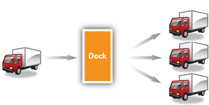

At times, the demand and supply for products can be unusually high. At other times, it can be unusually low. That’s why companies generally maintain a certain amount of safety stock, oftentimes in warehouses. As a business owner, it would be great if you didn’t have excess inventory you had to store in a warehouse. In an ideal world, materials or products would arrive at your facility just in time for you to assemble or sell them. Unfortunately, we don’t live in an ideal world.
Toys are a good example. Most toymakers work year round to be sure they have enough toys available for sale during the holidays. However, retailers don’t want to buy a huge number of toys in July. They want to wait until November and December to buy large amounts of them.
Consequently, toymakers warehouse them until that time. Likewise, during the holiday season, retailers don’t want to run out of toys, so they maintain a certain amount of safety stock in their warehouses.
Some firms store products until their prices increase. Oil is an example. Speculators, including investment banks and hedge funds, have been known to buy, and hold, oil if they think its price is going to rapidly rise. Sometimes they go so far as to buy oil tankers and even entire oil fields.Robert Winnett, “Soaring Prices: Speculators Hijack the Oil Market,” TimesOnline, September 12, 2004, http://business.timesonline.co.uk/tol/business/article481363.ece (accessed December 2, 2009).
A distribution centerA warehouse or storage facility where the emphasis is on processing and moving goods on to wholesalers, retailers, or consumers rather than on storage. is a warehouse or storage facility where the emphasis is on processing and moving goods on to wholesalers, retailers, or consumers.“Distribution Center,” Wikipedia.org, http://en.wikipedia.org/wiki/Distribution_center (accessed April 13, 2012). A few years ago, companies were moving toward large, centralized warehouses to keep costs down. In 2005, Walmart opened a four-million-square-foot distribution center in Texas. (Four million square feet is about the size of eighteen football fields.)
Today, however, the trend has shifted back to smaller warehouses. Using smaller warehouses is a change that’s being driven by customer considerations rather than costs. The long lead times that result when companies transport products from Asia, the Middle East, and South America are forcing international manufacturers and retailers to shorten delivery times to consumers.Sara Pearson Specter, “Industry Outlook: Mostly Cloudy, with a Few Bright Spots,” Modern Materials Handling 64, no. 3 (2009): 22–26. Warehousing products regionally, closer to consumers, can also help a company tailor its product selection to better match the needs of customers in different regions.
So how do you begin to find a product or pallet of products in a warehouse or distribution center the size of eighteen football fields? To begin with, each type of product that is unique because of some characteristic—say, because of its manufacturer, size, color, or model—must be stored and accounted for separate from other items. To help distinguish it, its manufacturer gives it its own identification number, called a SKU (stock-keeping unit)A label used to distinguish a product that is unique because of some characteristic, such as manufacturer, size, color, or model..“Stock-Keeping Unit (SKU),” BusinessDictionary.com, http://www.businessdictionary.com/definition/stock-keeping-unit-SKU.html (accessed December 2, 2009). Figure 9.10 "An Example of an SKU" shows an example of a SKU that appears on a box of products. When the product enters the warehouse, it is scanned and given an “address,” or location, in the warehouse where it is stored until it is plucked from its shelf and shipped.
Warehouses and distribution centers are also becoming increasingly automated and wired. As you learned in Chapter 8 "Using Marketing Channels to Create Value for Customers", some warehouses use robots to picks products from shelves. At other warehouses, employees use voice-enabled headsets to pick products. Via the headsets, the workers communicate with a computer that tells them where to go and what to grab off of shelves. As a result, the employees are able to pick products more accurately than they could by looking at a sheet of paper or computer screen.
The process we just described is an extremely simple explanation of a very complicated operation. The following video shows how one of Amazon.com’s distribution centers works.
Order Fulfillment at Amazon
http://www.youtube.com/v/Qt9hkZmbNfU&NRAmazon.com’s mission is “to be Earth’s most customer-centric company where people can find and discover anything they want to buy online.” Watch the following video to see one of Amazon’s order-fulfillment centers in action.
It’s pretty amazing when you think about how the thousands of products that come in and out of Amazon’s distribution centers every day ultimately end up in the right customer’s hands. After all, how many times have you had to look really hard to find something you put in your own closet or garage? Processing orders—order fulfillment—is a key part of the job in supply chains. Why? Because delivering what was promised, when it was promised, and the way it was promised are key drivers of customer satisfaction.Sriram Thirumalai and Kingshuk K. Sinha, “Customer Satisfaction with Order Fulfillment in Retail Supply Chains: Implications of Product Type in Electronic B2C Transactions,” Journal of Operations Management 23, no. 3–4 (2005): 291–303.
One of the ways companies are improving their order fulfillment and other supply chain processes is by getting rid of paper systems and snail mail. So, for instance, instead of companies receiving paper orders and sending paper invoices to one another, they send and receive the documents via electronic data interchange (EDI). Electronic data interchange (EDI)A special electronic format companies use to exchange business documents from computer to computer. is a special electronic format that companies use to exchange business documents from computer to computer. It also makes for greater visibility among supply chain partners because they can all check the status of orders electronically rather than having to fax or e-mail documents back and forth.
Figure 9.11 How Cross-Docking Works
Another new trend is cross-dockingThe practice of moving products between supply chain intermediaries so that they spend little or no time in warehouses as they are transported.. Products that are cross-docked spend little or no time in warehouses. As Figure 9.11 "How Cross-Docking Works" shows, a product being cross-docked will be delivered via truck to a dock at a warehouse where it is unloaded and put on other trucks bound for retail outlets.
Not all goods and services need to be physically transported. When you get a massage, oil change, or a manicure, the services pass straight from the provider to you. Other products can be transported electronically via electronic networks, computers, phones, or fax machines. Downloads of songs, software, and books are an example. So are cable and satellite television and psychic hotline readings delivered over the phone.
Motorbike Delivery
http://www.youtube.com/v/Lry6c4RudbMThe types of delivery vehicles used around the world might surprise you.
Other products, of course, have to be physically shipped. LogisticsThe physical flow of materials in the supply chain. refers to the physical flow of materials in the supply chain. You might be surprised by some of physical distribution methods that companies use. To get through crowded, narrow streets in Tokyo, Seven-Eleven Japan delivers products to its retail stores via motorcycles. In some countries, Coca-Cola delivers syrup to its bottlers via camelback. More commonly, though, products that need to be transported physically to get to customers are moved via air, rail, truck, water, or pipeline.
More products are shipped by truck than by another means. Trucks can go anywhere there are roads, including straight to customer’s homes. By contrast, planes, trains, and ships are limited as to where they can go. Shipping by truck is also fast relative to other modes (except for air transportation). However, it’s also fairly expensive. Some goods—especially those that are heavy or bulky—would require so many trucks and drivers it would be economically unfeasible to use them over long distances. Coal is a good example of such a product. It would take four to five hundred trucks and drivers to haul the amount of freight that one coal train can. The amount of CO2 emitted by trucks is also high relative to some of the other transportation modes, so it’s not the greenest solution.
International trade could scarcely be conducted without cargo shipping. Cargo ships transport “loose” cargo such as grain, coal, ore, petroleum, and other mined products. But they also transport consumer products—everything from televisions to toys. Consumer goods are often shipped in intermodal containers. Intermodal containersMetal boxes used to ship consumer goods. are metal boxes. The largest containers are fifty-three feet long and one hundred inches tall. The biggest cargo ships are huge and carry as many 15,000 containers. By contrast, the maximum a train can carry is around 250 containers stacked on top of each other. Figure 9.12 shows a picture of a cargo ship carrying intermodal containers. The good news about shipping via waterway is that inexpensive. The bad news is that it’s very slow. In addition, many markets aren’t accessible by water, so another method of transportation has to be utilized.
Air freight is the fastest way to ship goods. However, it can easily cost ten times as much to ship a product by air as by sea.James F. Thompson, C. F. H. Bishop, and Patrick E. Brecht, “Air Transport of Perishable Products,” Division of Agriculture and Natural Resources, University of California, Publication 2168 (Oakland: ANR Communication Services): 1. High-dollar goods and a small fraction of perishable goods are shipped via air. Freshly cut flowers and fresh seafood bound for sushi markets are examples of the latter. Keeping perishable products at the right temperature and humidity levels as they sit on runways and planes can be a challenge. They often have to be shipped in special types of containers with coolants. Freight forwarders are often hired to arrange the packing for perishables traveling by air and to ensure they don’t deteriorate while they are in transit. Despite the fact that it is expensive, air transportation is growing faster than any other transportation mode, thanks to companies like FedEx.
Railroads carry many of the same products as cargo ships—only over land. A significant percentage of intermodal containers offloaded from ships end up on railcars bound for inland destinations. The containers are then are trucked shorter distances to distribution centers, warehouses, and stores. Businesses that need to ship heavy, bulky goods often try to locate their facilities next to railroads. Lumber mills are an example.
In terms of speed and cost, shipping by rail falls somewhere between truck and water transportation. It’s not as slow and inexpensive as moving goods by water. However, it’s not as fast as shipping them by truck. Nor is it as expensive. So, when the price of gasoline rose in to record highs in 2008, shippers that traditionally used trucks began to look at other transportation alternatives such as rail.
Pipelines are generally used to transport oil, natural gas, and chemicals. Two-thirds of petroleum products are transported by pipeline, including heating oil, diesel, jet fuel, and kerosene. Pipelines are costly to build, but once they are constructed, they can transport products cheaply. For example, for about one dollar you can transport a barrel of petroleum products via pipeline from Houston to New York. The oil will move three to eight miles per hour and arrive in two to three weeks depending on the size of the pipe, its pressure, and the density of the liquid.“Oil Pipelines: Small Price, Big Value,” In the Pipe, April 15, 2005, http://www.enewsbuilder.net/aopl/e_article000391720.cfm (accessed December 2, 2009). Like other products, products shipped via pipelines often have to be moved using two different transportation modes. Once your barrel of oil has made it to New York, to get it to service stations, you will need to move it by rail or truck. The material in pipelines can also be stolen like other products can. In Mexico, for example, drug gangs have tapped into pipelines in remote areas and stolen millions of dollars in oil.Martha Mendoza, “Millions of Dollars in Stolen Mexican Oil Sold to U.S. Refineries,” Fort Worth Star-Telegram, April 11, 2009, 6A.
Companies face different tradeoffs when choosing transportation methods. Which is most important? Speed? Cost? Frequency of delivery? The flexibility to respond to different market conditions? Again, it depends on your customers.
Goya Foods has many challenges due to the variety of customers it serves. The company sells more than 1,600 canned food products. Because the types of beans people prefer often depends on their cultures—whether they are of Cuban, Mexican, or Puerto Rican descent, and so forth—Goya sells thirty-eight varieties of beans alone. Almost daily, Goya’s truck drivers deliver products to tens of thousands of U.S. food stores, from supermarket chains in Texas to independent mom-and-pop bodegas in New York City. Delivering daily is more costly than dropping off jumbo shipments once a week and letting stores warehouse goods, says the company’s CEO Peter Unanue. However, it’s more of a just-in-time method that lets Goya offer stores a greater variety and ensure that products match each store’s demographics. “Pink beans might sell in New York City but not sell as well in Texas or California,” says Unanue.Barbara De Lollis, “CEO Profile: At Goya, It’s All in La Familia,” USA Today, http://abcnews.go.com/Business/Story?id=4507435&page=1 (accessed December 2, 2009).
Some firms store products until their prices increase. A distribution center is a warehouse or storage facility where the emphasis is on processing and moving goods on to other parts of the supply chain. Warehousing products regionally can help a company tailor its product selection to better match the needs of customers in different regions. Logistics refers to the physical flow of materials in the supply chain. Not all goods and services need to be physically transported. Some are directly given to customers or sent to them electronically. Products that need to be transported physically to get to customers are moved via, air, rail, truck, water, and pipelines. The transportation modes a firm uses should be based on what its customers want and are willing to pay for.